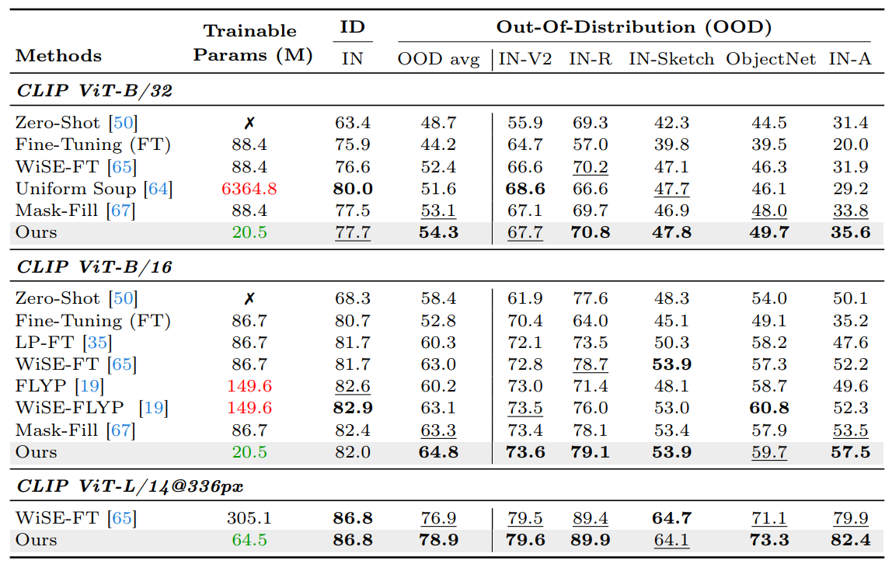
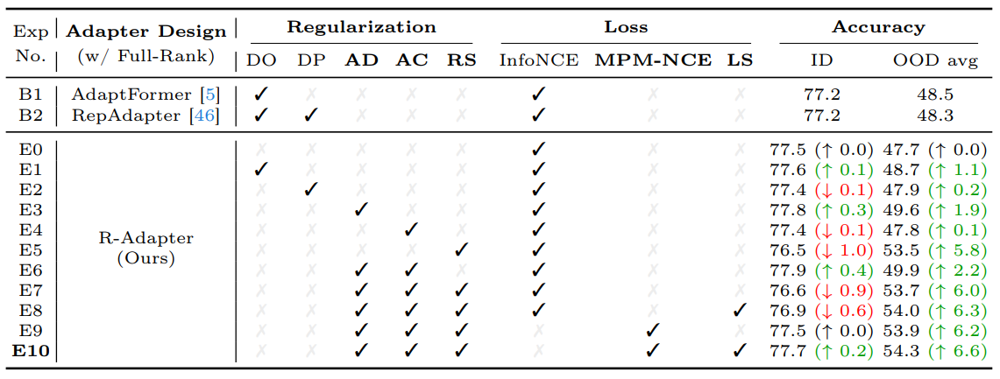

Experimental results
1. ImageNet classification inder distribution shifts
Table 1. Top-1 accuracy of models with different robust fine-tuning on ImageNet (ID) and OOD datasets. “OOD avg” is the average accuracy across the five OOD datasets. Entries in green indicate fewer parameters than full fine-tuning, and red use more.
2. Few-shot ImageNet classification

Table 2. Top-1 accuracy for adapting CLIP to 16-shot ImageNet classification on ID and OOD datasets. OOD avg is the average accuracy across the four OOD datasets. “r-Rank” denotes our models with adapters employing low-rank decomposition while “Full-Rank” is no decomposition. All methods adopt CLIP ViT-B/16 as the backbone.
3. Cross-modal retrieval

Table 3. Cross-modal retrieval performance on the COCO (5K test set) and Flickr30K datasets in Recall at K (R@K). B and L denote the use of 12-layer and 24-layer transformer encoders, respectively. FLYPL training has failed due to memory constraints.
4. Open-vocabulary segmentation

Table 4. Comparison of mIoU results between the OVSeg fine-tuned with our method and existing open-vocabulary segmentation models. Note that OVSeg (Org.) is trained in two stages, starting with full CLIP model fine-tuning followed by mask prompt tuning, whereas OVSeg (Ours) involves single-stage adapter training.
Ablation studies
1. Effectiveness of key components
Table 5. Ablation study on key components of our method and comparison with the other adapter-tuning methods using full-rank structure. The experiments are performed on the ImageNet classification with ViT-B/32. The last row (E10) corresponds to our default configuration. DO: Dropout in Adapters. DP: Drop-path in pre-trained layers. AD: Adapter Dropping. AC: Accumulation. RS: Re-scaling. LS: Label Smoothing.
2. Re-scaling coefficient

Figure 3. Performance of our method varying re-scaling coefficient α against WiSE-FT.
Acknowledgements
This work was supported by NRF grants (NRF-2021R1A2C3012728–30%, NRF2018R1A5A1060031–30%, RS-2024-00341514–25%) and IITP grants (RS-2019II191906–10%, Artificial Intelligence Graduate School Program - POSTECH, RS-2019-II190079–5%, Artificial Intelligence Graduate School Program - Korea University) funded by Ministry of Science and ICT, Korea.
Code
Check our GitHub repository: [github]
Reference
[1] Sungyeon Kim, Dongwon Kim, Minsu Cho, and Suha Kwak. Proxy anchor loss for deep metric learning. In Proc. IEEE Conference on Computer Vision and Pattern Recognition (CVPR), 2020.
[2] Xun Wang, Xintong Han, Weilin Huang, Dengke Dong, and Matthew R Scott. Multi-similarity loss with general pair weighting for deep metric learning. In Proc. IEEE Conference on Computer Vision and Pattern Recognition (CVPR), 2019.
[3] Aleksandr Ermolov, Leyla Mirvakhabova, Valentin Khrulkov, Nicu Sebe, and Ivan Oseledets. Hyperbolic vision transformers: Combining improvements in metric learning. In Proc. IEEE Conference on Computer Vision and Pattern Recognition (CVPR), 2022.